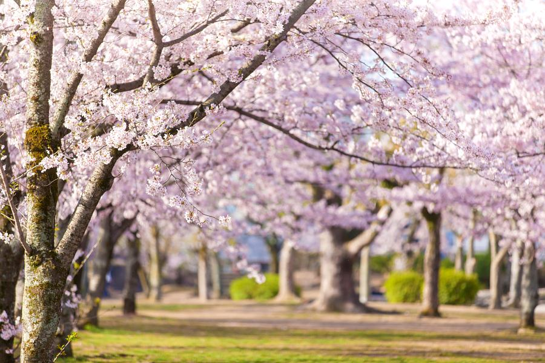
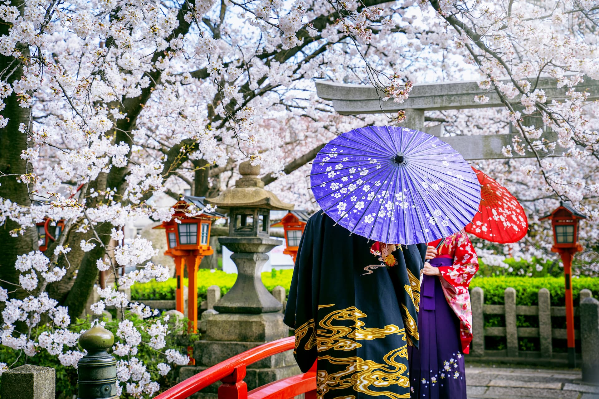

Japão
🇯🇵 Japão
Japão — sua história e cultura milenar
Saiba tudo sobre o Japão
Aqui você vai descobrir curiosidades, histórias
O que é o Japão?
O Japão é um arquipélago localizado no leste da

Vídeo mais recente sobre o Japão
Multimidia
Viagem de trem, para Kamakura perto de Tóquio 🌸🎌
https://youtu.be/9KD3kg_L3n4?si=yoyXR7dv5xY7ny6P
O Japão possui uma herança cultural riquíssima, visível em sua arquitetura, literatura, religião e arte. Do xintoísmo ao budismo, passando pelos samurais que marcaram os períodos feudais, até o florescimento do Período Edo (1603–1868), cada época deixou marcas profundas na identidade japonesa. Hoje, tradições milenares convivem em harmonia com a modernidade das grandes metrópoles, como Tóquio e Osaka, onde templos antigos dividem espaço com arranha-céus e a cultura pop.
Lugares Imperdíveis
Quioto: templos históricos e jardins tradicionais
Tóquio: a capital moderna, cheia de arranha-céus e tecnologiaMonte Fuji: a montanha mais famosa do JapãoNara: famosa pelos cervos que andam livremente e pelos templos

Novidades do Japão
O Japão é referência mundial em tecnologia, mas também mantém vivas tradições
como o teatro Noh, a cerimônia do chá, o sumô, o ikebana (arte dos arranjos florais) e o sumô, considerado o esporte nacional. Essa harmonia entre o novo e o antigo transforma o Japão em um destino único para quem deseja conhecer, estudar e se encantar com uma sociedade que consegue equilibrar o futuro com o respeito profundo às suas raízes.
Copyright 2025 – por Dany